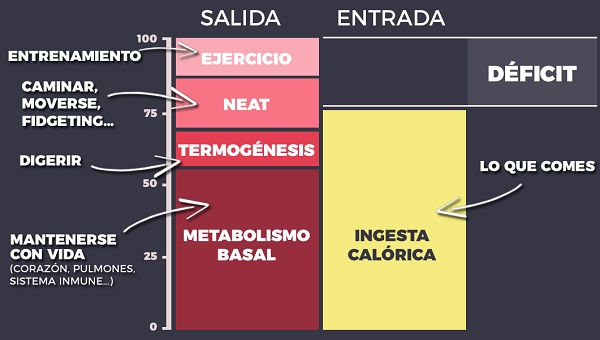

Perder grasa
Perder grasa no es tan dificil como creemos y aqui te enseñamos como:
Perder grasa no es tan dificil como creemos y aqui te enseñamos como:
Durante millones de años, las calorías escaseaban, y tu cerebro interpretaba la pérdida de grasa como una amenaza. Por ese motivo, tu cuerpo cuenta con multitud de estrategias para evitar perder peso
Desde un punto de vista teórico, hay tres aspectos fundamentales que debes cumplir para perder grasa de manera saludable:
Un Deficit Calorico es básicamente comer menos de lo que gastas. Al reducir tu ingesta calórica fuerzas a tu cuerpo a cubrir la diferencia con sus reservas de grasa.
¿Implica esto que debes registrar el detalle de todo lo que comes para estimar tus calorías? No necesariamente. Registrar todas tus comidas es un proceso tedioso, que tiene además un margen de error elevado.
Mi recomendación inicial es que empieces simplemente comiendo comida real,La comida real ayuda a regular tu ciclo hambre-saciedad, haciendo que comas menos sin darte cuenta, logrando el déficit calórico de manera natural.
Sin embargo, en algunos casos sí es recomendable llevar un registro más estricto, especialmente si quieres lograr un nivel de grasa corporal especialmente bajo (eliminando por ejemplo la llamada grasa rebelde). Contar calorías durante un tiempo te ayudará a entender mejor tus alimentos y a ser más consciente de lo que realmente comes.
Después del agua, la proteína es el principal componente de nuestro cuerpo, y participa en casi todos los procesos celulares. No en vano su nombre origina del griego proteios, que podríamos traducir como de importancia primordial.
En el proceso de pérdida de grasa, la proteína cumple dos funciones principales.
Se recomienda de manera general 1,5 a 2 g de proteína por cada kilo de peso corporal Ejemplo:Si pesas 80 kg, deberías comer entre 120 y 160 gramos de proteína al día.
Y recuerda que hablamos de macronutriente, no de alimento, por ejemplo: cien gramos de carne tienen por ejemplo entre 20 y 25 gramos de proteína.
Si tienes mucho sobrepeso haz el cálculo en base a tu peso objetivo, no el actual. Si pesas 80 kg pero tu peso objetivo son 60 kg, seguramente sea suficiente con consumir 90-120 gramos de proteína.
Y el tercer gran pilar de la pérdida de grasa corporal es el entrenamiento de fuerza. Uno de los errores frecuentes al perder grasa es realizar demasiado ejercicio aeróbico y muy poco (o nulo) entrenamiento de fuerza.
Entrenar tu fuerza es fundamental para prevenir la pérdida muscular, suavizando además la ralentización metabólica que se produce al recortar calorías.
Además, recomiendo incluir bastante actividad de baja intensidad, como caminar y hacer fidgeting. Esto eleva el NEAT y mitiga las adaptaciones metabólicas que suelen acompañar la pérdida de grasa.
Otro factor y no menos importante para perder grasa el descanso, El déficit de sueño dificulta la pérdida de grasa por múltiples vías. Por un lado, eleva hormonas del apetito, aumentando nuestra ingesta sin darnos cuenta. Perjudica además la sensibilidad a la insulina, causando que las mismas calorías nos engorden más. Por si esto fuera poco, dormir mal reduce la testosterona y eleva el cortisol, interfiriendo con el entrenamiento y perjudicando la masa muscular.